Lecture 6 continued
- Note: our key focus in COMP306 will be on Binary search tree, AVL trees and Splay trees
Search Tables
An ordered map implemented by means of a sorted list. Stores key-value pairs
- Sometimes still some sense of ordering
- store the items in an array-based sequence
- sorted by key
- use an external comparator for the keys
- use binary search to lookup keys
Search tables performance:
- Searches take time
- using binary search
- Inserting a new item takes time
- Removing an item takes time
Binary search trees
-
Binary tree storing keys (or key-value entries) at its internal nodes and satisfying the following property:
-
Let
u,v, andwbe three nodes such thatuis in the left subtree of v and w is in the right subtree of v.- v is in the middle, u on left and w is on the right
-
External nodes do not store items
-
In-order traversal of a binary search tree visits the keys in increasing order
-
Be careful: key can be tuples or pairs
-
For instance in the one below, compare number first, then letter
| search tree image 1 | search tree image 2 |
|---|---|
| 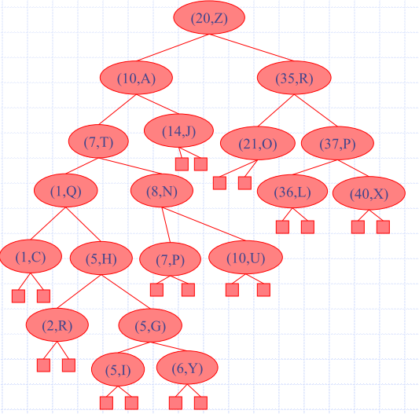 | 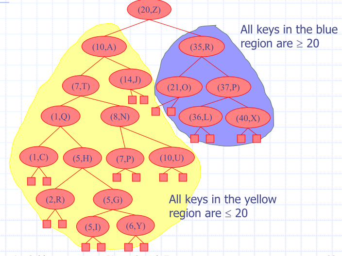 |
Search for key
-
Trace a downward path starting at the root
-
Next node visited depends on the comparison of k with the key of the current node
- if a leaf is reached, the key is not found
Example:
get(4) - call
TreeSearch(4, root)
- if a leaf is reached, the key is not found
Example:
-
Algorithms for nearest neighbour queries are similar
-
Search proceeds down the tree to found item or an external node
-
Example: Search for item with key 11
| Intermediate step | result, no node |
|---|---|
 |
 |
Insertion
put(k, o)- search for key k
- using TreeSearch
- Assume k is not already in the tree
- w is the leaf reached by the search
- Insert k at node w and expand w into an internal node
Example: insert 5
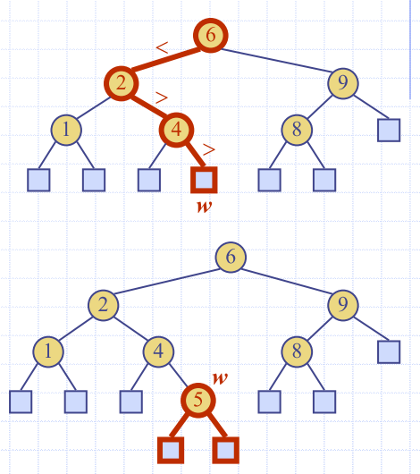
Deletion
remove(k)
- search for key k
- Assume key k is in the tree
- is the node storing
- If node has a leaf child
- remove and with
removeExternal(w) - removes and its parent
- remove and with
- If node has a leaf child
Example: remove 4
- Consider the case where the key k to be removed is stored at a node v whose children are both internal
- HAVE TO PERFROM IN-ORDER TRAVERSAL
- find internal node w that follows v in an in-order traversal
- 'I need to find the next key bigger than
k' - copy key(w) into node v
- remove node w and its left child z
- must be a leaf
Example: remove 3
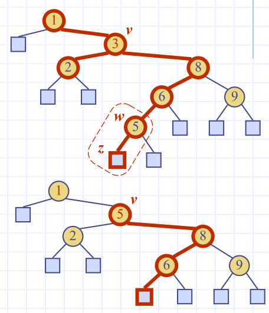
Example: What steps would be involved in deleting the node with key=58?
| before | after |
|---|---|
| 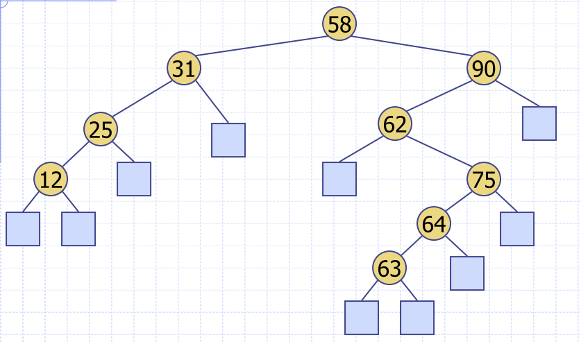 | 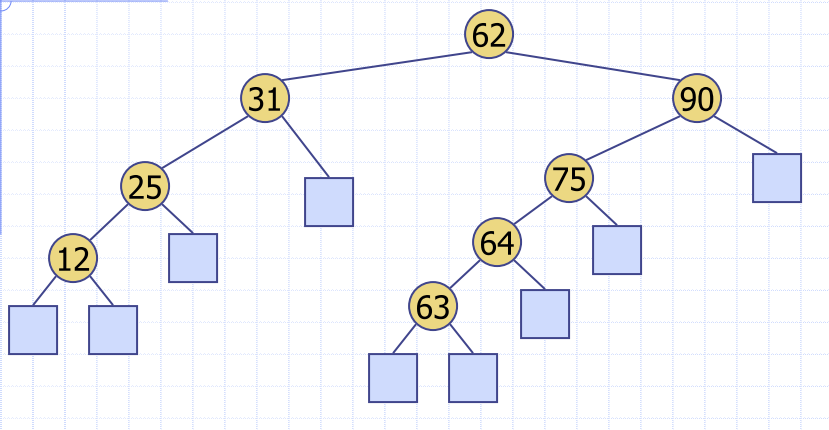 |
Performance
- Consider an ordered map with n items implemented by means of a binary search tree of height h
- space used is O(n) (we have n things)
- get, put and remove take O(h) time ( is the height of the tree)
- when the tree is a stick,
- Height h is
- O(n) in the worst case
- O(log n) in the best case
What is I want to store duplicate keys?
- Create a multimap (lookup multimap ADT)
- return the list, and return that for a given key
- One node with a key
BST vs Binary Search in Arrays
- searching the tree just simulates looking up an array (in certain circumstances)
AVL Trees
Balanced binary search tree
- For every internal node v, the heights of the children of v can differ by at most 1
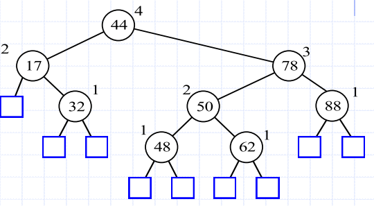
Height-Balance property: for every internal node v, the heights of the children of v differ by at most 1
- Height of right subtree - height of left subtree OR count the level of each subtree
AVL tree search
- is
TreeSearch(48, root)- What is the maximum height of an AVL tree with nodes
- Height of an AVL tree storing keys in
Insertion (AVL)
- Insertion is as in a binary search tree
- by expanding an external node
- Example
- insert 54
- Is it still an AVL tree?
- insert 54
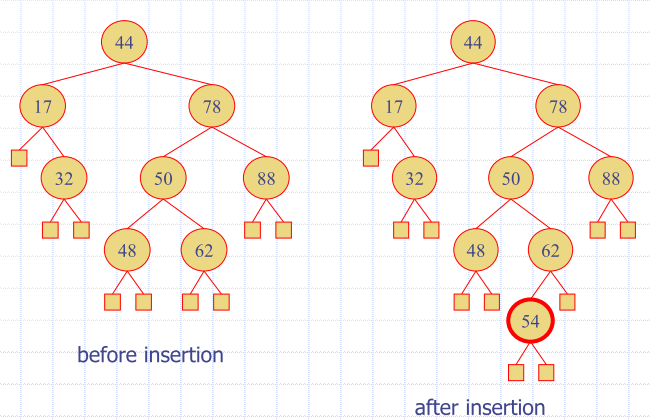
-
At worst, one or more ancestors will change from
- having children with height difference 1 to
- having children with height difference 2
-
Rebalancing the first unbalanced ancestor will rebalance the tree
-
Need to preserve in-order relation
- using tri-node restructuring
-
Insertion is as in a binary search tree, plus rebalance
-
is the first unbalanced node encountered while traveling up the tree from w
-
is the child of with the larger height
-
is the child of with the larger height
-
restructure(x)to restore balance at
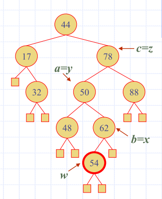
Tri-node restructuring
- Let
(a,b,c)be the in-order listing of - Perform the rotations needed to make b the topmost node of the three
- move up to make it the root node of and
- becomes the right subtree of
- becomes the left subtree of
| Before | after |
|---|---|
| 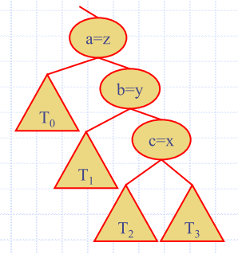 | 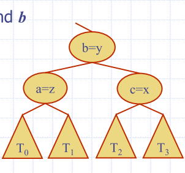 |
Tri-node Restructuring (Case 2)
- Let
(a,b,c)be the in-order listing of - Perform the rotations needed to make b the topmost node of the three
| Step 1 | Step 2 | Step 3 |
|---|---|---|
| 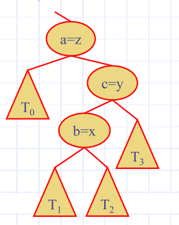 |
There are all mirror symmetric cases:
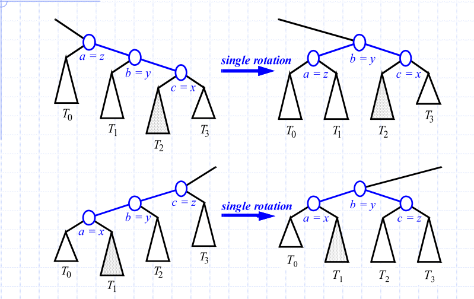
Removal
- Begins as in a binary search tree
- Removed node will become an empty external node
- its parent, w, may cause an imbalance
- Example: remove(32)
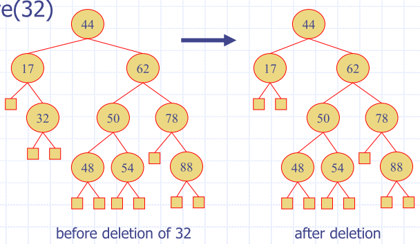
Balancing after a removal
- z is the first unbalanced node encountered while travelling up the tree from w. Let y be the child of z with the larger height, and let x be the child of y with the larger height
- Perform tri-node restructuring to restore balance at z
- As this restructuring may upset the balance of another node higher in the tree, must continue checking for balance until the root of T is reached

tri-node restructuring
- Order preserving
- changes preserve the in-order traversal of all nodes
- Local changes
- changes are made locally when the grandparent is unbalanced
- only a constant number of nodes are altered
- single restructure restores the height-balance property globally
AVL Tree Performance
| Operation | performance |
|---|---|
| Space | |
| Restructuring | - using a linked-structure |
| Searching | |
| Height | - no restructures needed |
| Insertion | |
| Removal | - restructuring up the tree, maintaining heights is |
Splay Tree
-
Splay tree is a binary search tree
- nodes are splayed after being accessed
- deepest internal node accessed
- nodes are splayed after being accessed
-
Do not enforce a logarithmic upper bound on height of the tree
- worst-case time complexity of search, delete and insert is
-
Moves a node to the root using rotations
-
Performed after all operations
- searches
- insertions
- Removals
Rotations
right rotation
- makes the left child x of a node y into y’s parent; y becomes the right child of x
| Right rotation | left rotation |
|---|---|
| 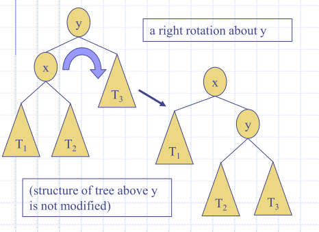 | 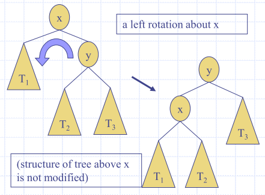 |
Splaying
| Method | Splay Node |
|---|---|
| Search for k | If key found, use that node, If key not found, use parent of ending external node |
Insert(k,v) |
Use new node containing the entry inserted |
| Remove item with key k | Use parent of the internal node that was actually removed, from the tree (the parent of the node that the removed, item was swapped with) |
How do we splay?
- Is the node a child of the root?
- zig (left rotation)
- zag (right rotation)
Example combinations
| Zag | Zig | zig-zig | zag-zag | NOTE: Zig-zag |
|---|---|---|---|---|
| 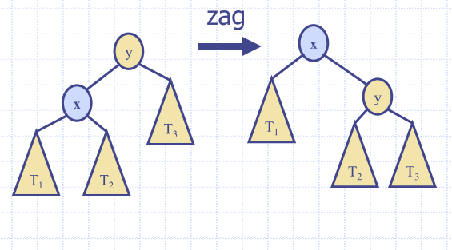 | 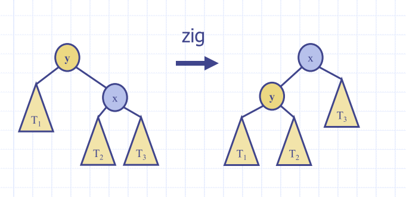 | 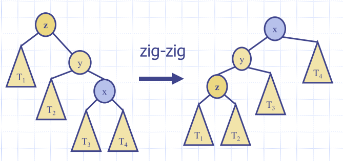 | 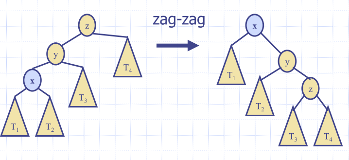 | 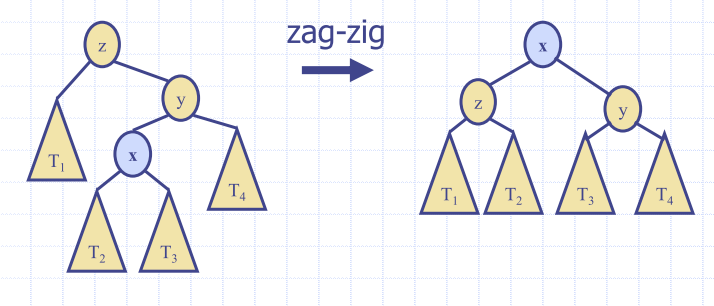 |
Ultimate table:
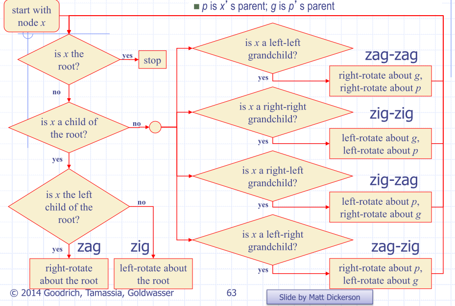
- Becuase splay operations are constantly occuring
- amortised running time is much better than linear
- Should have really good expected behaviour
Insertions with Splaying
Insert 2:
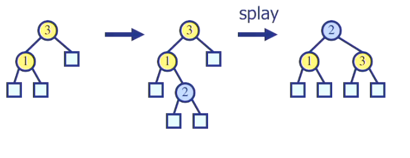
Insert 4:
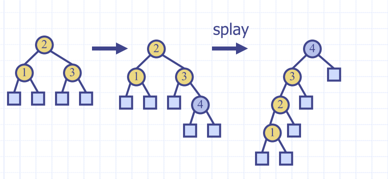
Splaying costs
-
Splaying costs
- where h is height of the tree
- O(n) worst-case
- where h is height of the tree
-
O(h) rotations, each of which is O(1)
-
Amortised cost of splaying any node is O(log n)
- amortised cost of a splay operation is the time T(n) needed to perform a series of n splay
operations, divided by n
- i.e. 𝑇(𝑛) ÷ 𝑛
- amortised cost of a splay operation is the time T(n) needed to perform a series of n splay
operations, divided by n
-
Splay trees can adapt to perform searches on frequently-requested items much faster than O(log n) in some cases
Key Ideas
- probably ~10-20 balanced tree types in the literature
- most commonly seen: AVL, Splay, Red-black, B+ trees
Red-Black Trees
- A very specific type of balanced tree
- A specialisation of (2, 4)-trees
- Very similar in spirit to the AVL tree, but less stringent balance requirements
- Implication: Faster inserts and deletions, but slower finds.
B-Trees (B+ and other variants)
- Typically used in database applications
- Very high number of children
- Allows for shallow trees
- In databases, this means fewer disk seeks